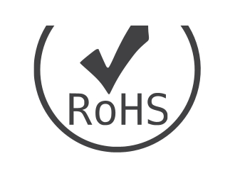
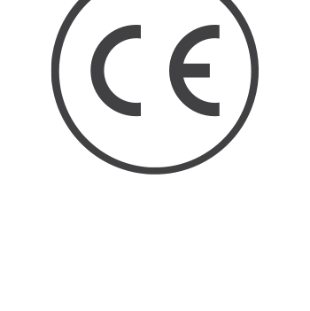
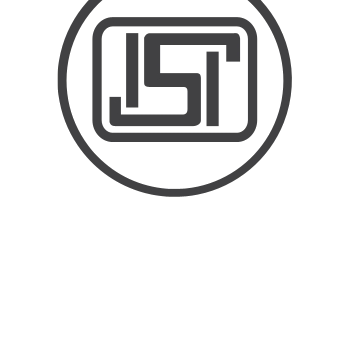
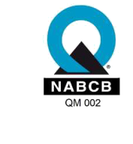

DEON products are tested and documented under controlled production conditions and supplied with batch traceability. ISO 9001, ISO 45001, ISO 14001, UL and BIS.
ISO 9001, ISO 45001, ISO 14001, UL and BIS — tap any certificate to view it in full.
Our products and processes meet recognised international and Indian standards.




At DEON, absolute product reliability is achieved through rigorous, multi-stage testing. From the moment raw chemical monomers arrive at our 60,000 sq. mtr facility to the final automated packing of converted rolls, our quality-control engineering guarantees flawless, world-class tape performance under all environmental conditions.
Request datasheets, test reports or the full certification list.